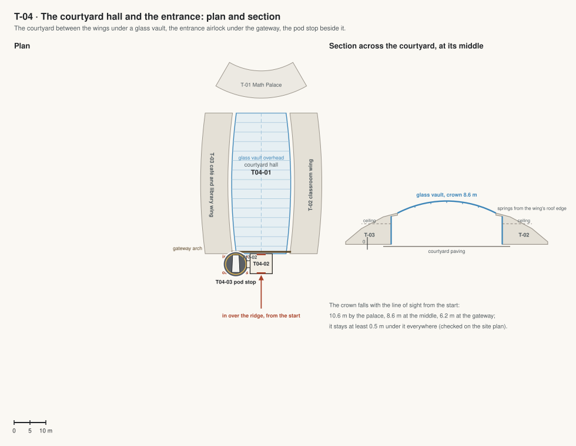

T-04 · The courtyard hall and the entrance
The courtyard between the wings, now under a glass vault, with the entrance airlock under the gateway and a pod stop beside it: the way in from the start.
Jim, 5 Oct 2026: "since bad conditions, all the schools buildings should be connected and sealed, so there should not be open area to the air. all open space should be covered by dome or sealed". Every room, court and garden is under a roof, a glass vault or a dome; every building is joined to the next by a sealed link; people meet the outside only at airlocks.

| Code | Room | What it is for | Size |
|---|---|---|---|
| T04-01 | Courtyard hall | The courtyard under a glass vault on slender steel ribs: the paving, the bollards and young trees, the wings' doors on both sides and the palace's door at the end, warm and in air. Also: Assemblies, the graduation reception, stargazing evenings in shirt sleeves. | 780 m² |
| T04-02 | Entrance airlock | Under the gateway: outer and inner sliding glass doors with a chamber 6 m long between them; the inner doors open once the outer ones have closed and the air is in. Suit lockers and a bench along the side. | 44 m² |
| T04-03 | Pod stop | A pad right beside the airlock with one pod, its door at a short glass collar from the airlock: take it and fly over the campus. | 64 m² |